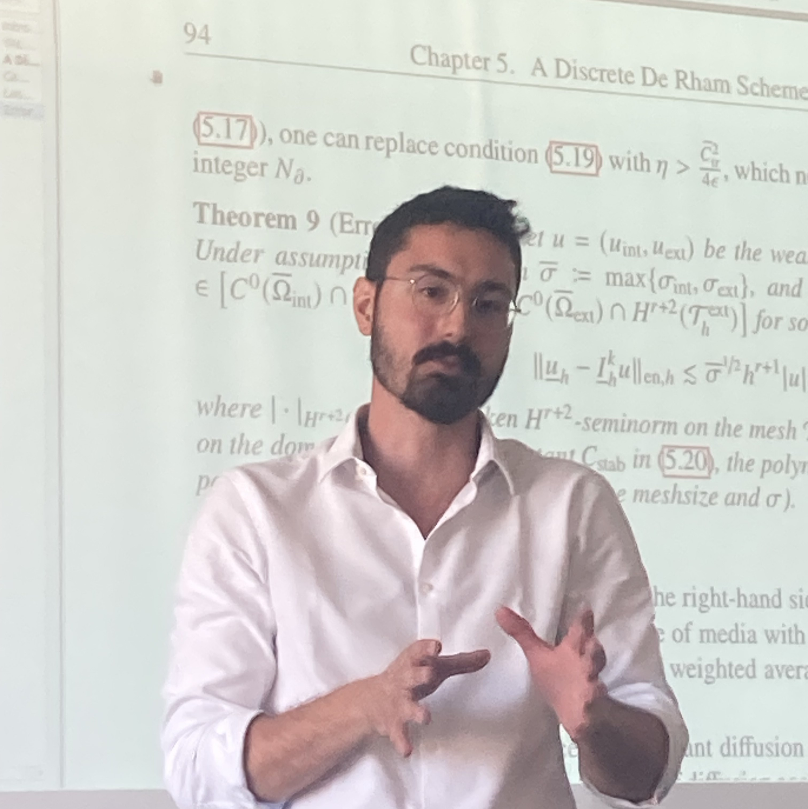

Current position: Postdoctoral fellow
Affiliation: IMAG, University of Montpellier, France
Email: aurelio-edoardo.spadotto AT umontpellier.fr
ResearchGate: researchgate.net/profile/Aurelio-Spadotto
LinkedIn: linkedin.com/in/aurelio-spadotto
D. A. Di Pietro, S. Mendez, A. Spadotto
A discrete de Rham discretization of interface diffusion problems with application to the Leaky Dielectric Model
J.Comput.Phys., 2025. Published online . DOI:10.1016/j.jcp.2025.113920
D. A. Di Pietro, A. Spadotto
Hybrid Methods for Friedrichs Systems with Application to Scalar and Vector Diffusion-Advection Problems
WCCM ECCOMAS:(July 2026)
Munich, Germany
Hybrid Methods for Friedrichs Systems with Application to Scalar and Vector Diffusion-Advection Problems(A. Spadotto, D.A. Di Pietro)
MOX Seminar(July 2026)
Politecnico di Milano, Italy
Hybrid methods for Friedrichs systems(A. Spadotto, D.A. Di Pietro)
Séminaire de Mathématiques Appliquées (LMJL)( February 2026)
Nantes, France
Simulation numérique d’une membrane cellulaire à l’aide de schémas supportant des maillages polyédriques adaptables à l’interface(A. Spadotto, D.A. Di Pietro, S. Mendez)
Coupled Problems 2025:(May 2025)
Villasimius, Italy
A numerical scheme supporting polygonal meshes for a coupled Stokes/Maxwell problem (A. Spadotto, D.A. Di Pietro, S. Mendez)
POEMS:(November 2024)
Paris, France
A discrete de Rham method for an interface electrostatic problem (A. Spadotto, D.A. Di Pietro, S. Mendez)
Journées Math Bio Santé:(June 2024)
Nantes, France
Immersed boundary simulations of red blood cells in blood analyzers: representation of Maxwell stress (A. Spadotto, S. Mendez)
Extrem CFD Workshop, 7th Ed: (January 2024)
Merville-Franceville, France; 2024
Electrodeformation of red blood cells, extension to 3D and improved accuracy at membrane (A. Spadotto , S. Mendez, P. Benard)
Dynacaps:(July 2023)
UTC Compiègne, France
Towards modelling of the electro-deformation for red blood cells flowing in Coulter counters (A. Spadotto, S. Mendez)
Extreme CFD Workshop, 6th Ed: (January 2023)
Merville-Franceville, France
Ghost fluid method (GFM) for Electrodeformation (A. Spadotto , S. Mendez)
HAV109X: Méthodes Calculatoires
Université de Montpellier, Faculte de Science- Fall 2022, exercise sessions, 2 sections
- Fall 2023, exercise sessions, 1 sections
HAS101X: Outils Mathématiques 1
Université de Montpellier, Faculte de Science- Fall 2023, exercise sessions, 1 sections
- Fall 2024, exercise sessions, 4 sections
HAS102X: Outils Mathématiques 2
Université de Montpellier, Faculte de Science- Fall 2024, exercise sessions, 2 sections